Med Control Evaluation — booking medical evaluations without the paperwork. (2018)
I designed the website and web app where Med Control Evaluation’s clients schedule IME appointments, track their requests and manage reports from any screen.
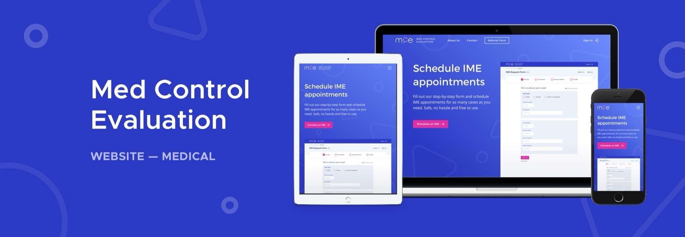
What is MCE?
MCE is an independent medical evaluation company that has been providing nationwide IMEs, peer reviews and record reviews.
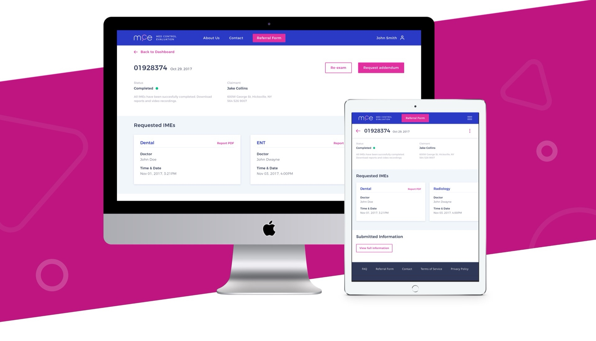
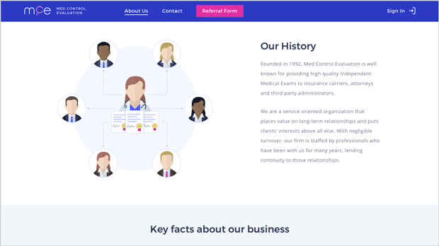
Homepage
The homepage leads with one clear action: schedule an IME. A step-by-step form preview sits right in the hero, so clients see how simple the process is before they start.
Below, the page explains who MCE is, what the team does at each stage of an evaluation and which appointment services they offer, ending with a second call to action.
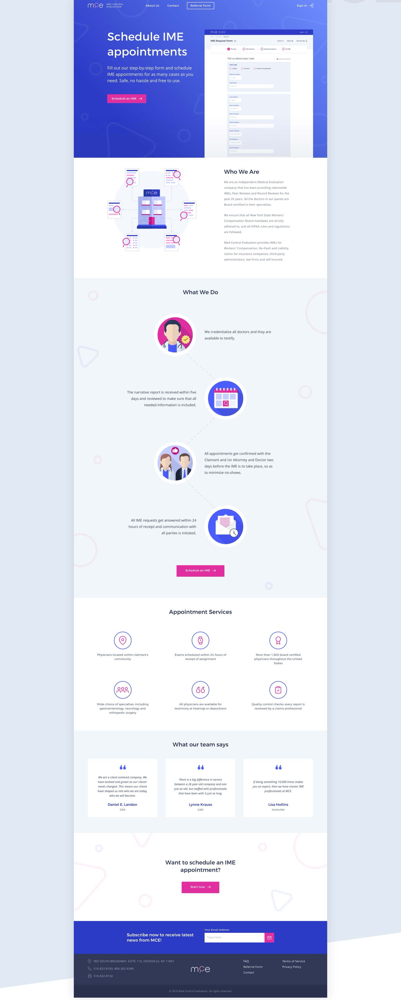
IME request form
The request form splits the process into four steps — the case, the claimant, attorneys & doctors, and the IME itself — with progress always visible.
Clients can save a form and finish it later, share it or cancel it, and the same flow works on tablet and phone.
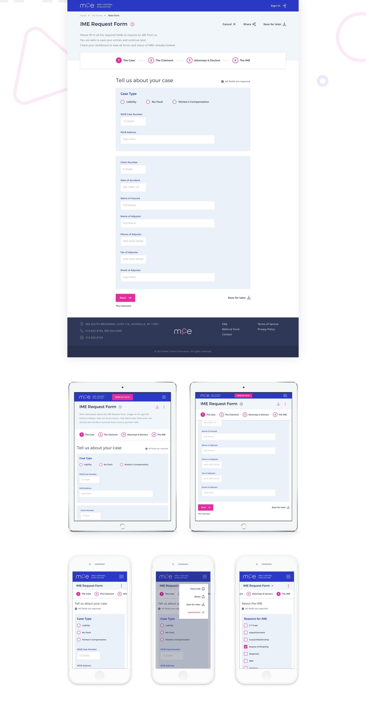
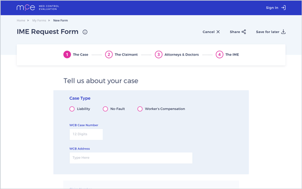
Dashboard
Signed-in clients get a dashboard of every IME request with its status, from submitted to completed. Filters and search make it quick to find a claim, and finished requests can be archived.
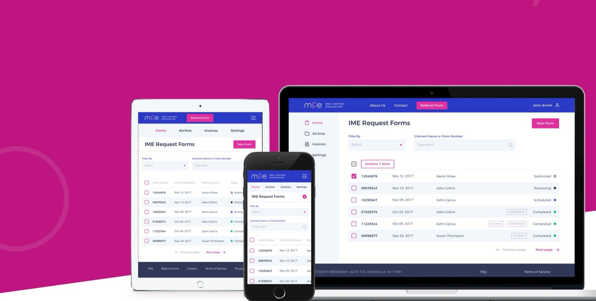
The experience
Working across screen sizes, the MCE web application includes several animations that improve the experience as people move through the dashboard, fill in IME forms or review their earlier forms and profile settings.
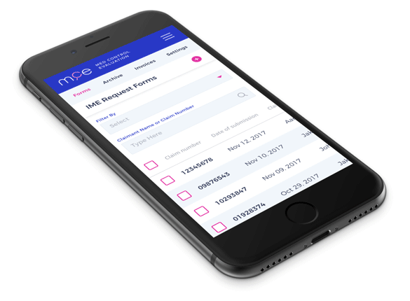
The identity
To present the medical field in a modern way, the logo and interface use blue and purple tones. Montserrat sets the headlines and Open Sans the interface.
The logo hides a magnifying glass, which stands for reviewing forms — what the MCE web application does throughout the experience. It sits with the other letters to form “MCE” out of elegant, clean rounded shapes.
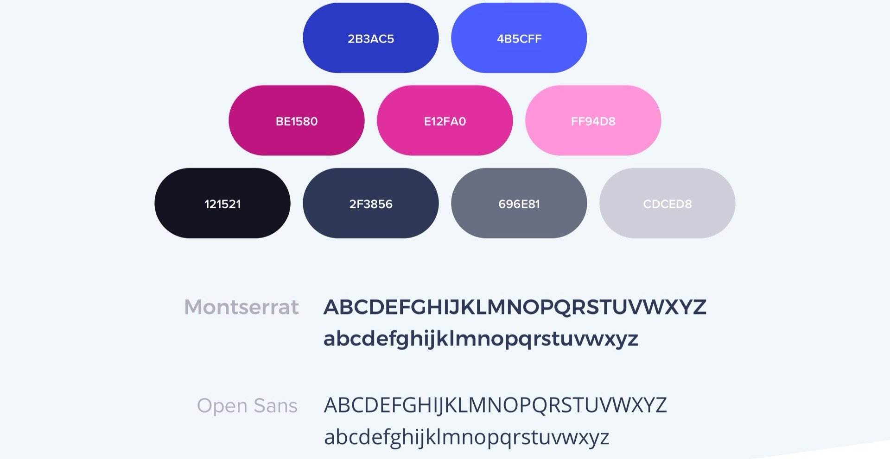
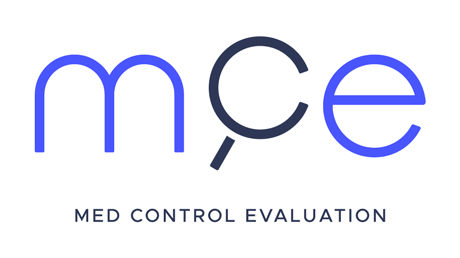
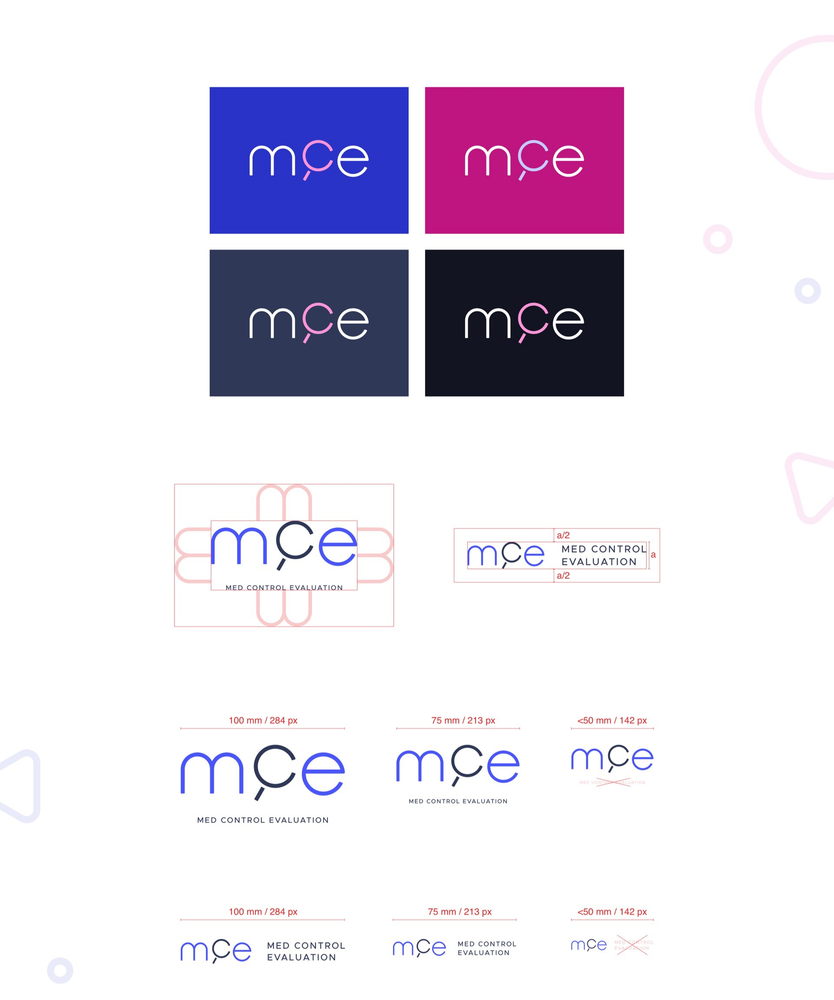
Custom graphics
Custom illustrations give the MCE brand a more human feel. The team is drawn in a simple flat style for the website section that introduces each member.
To help people read through the content, more illustrations follow the copy across the site.
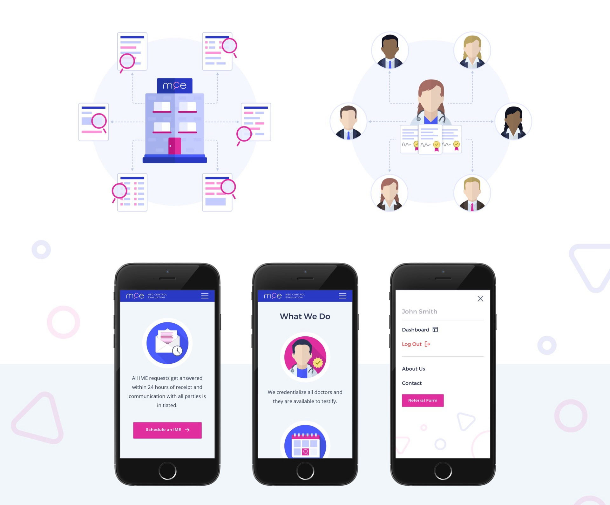